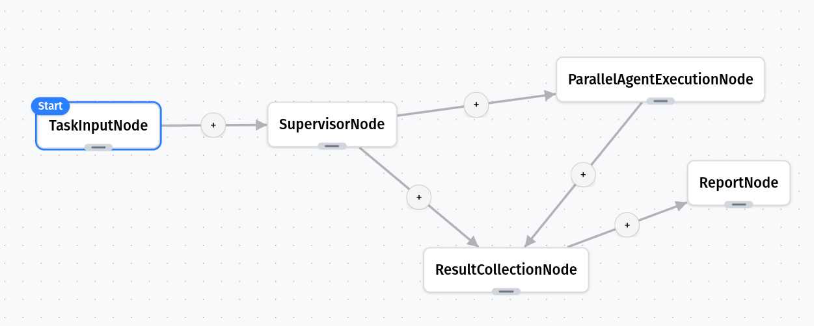
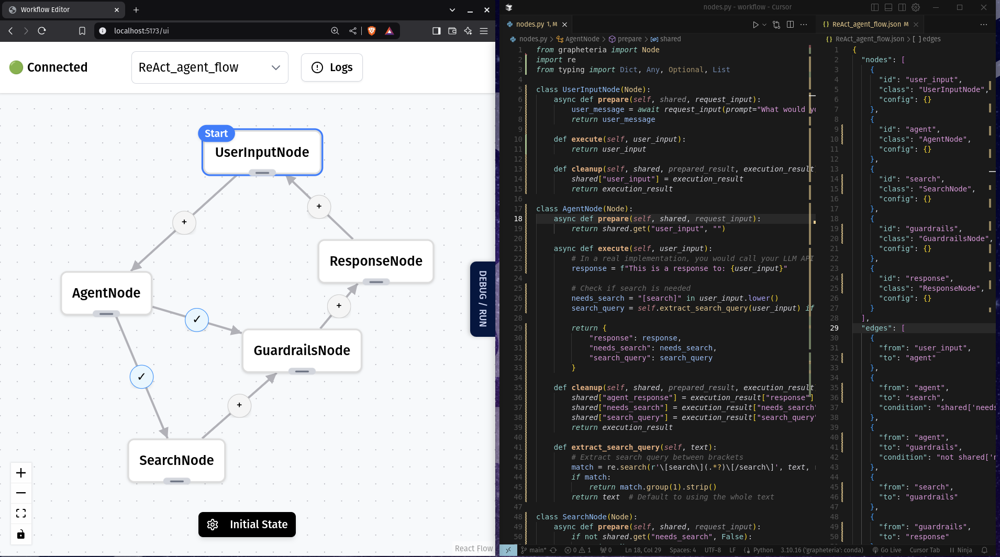
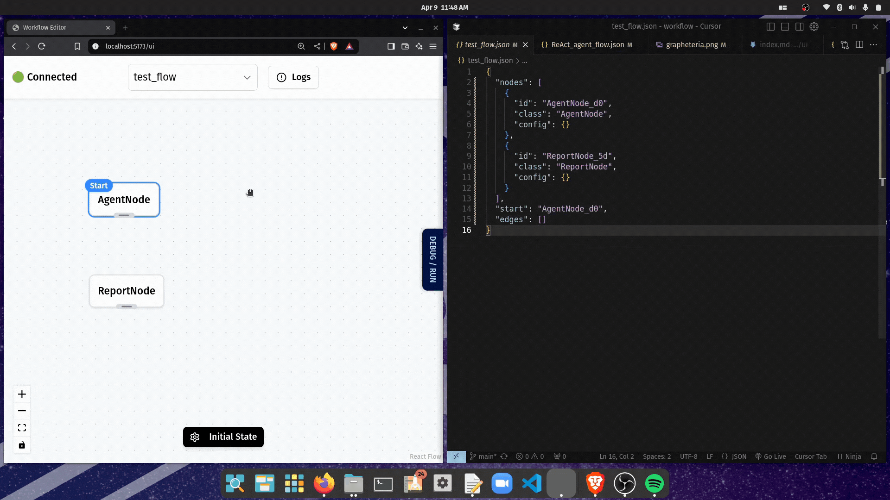
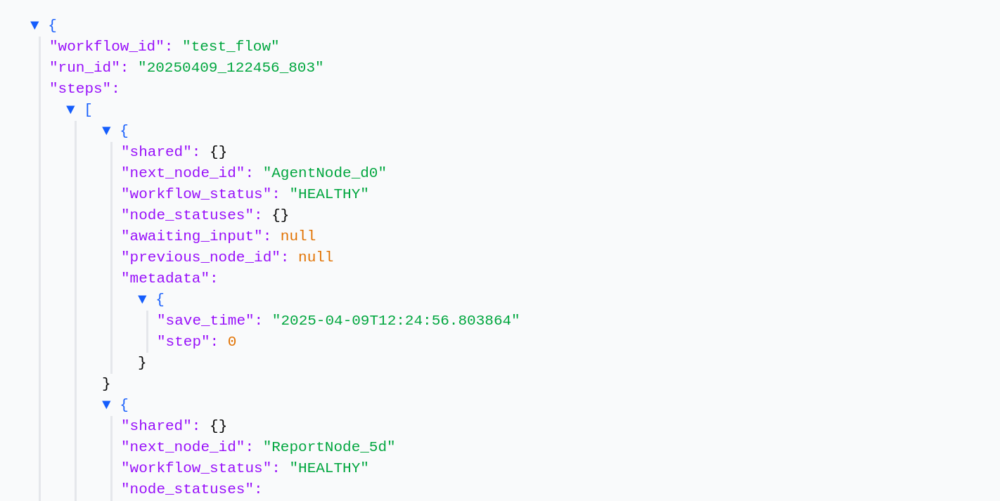
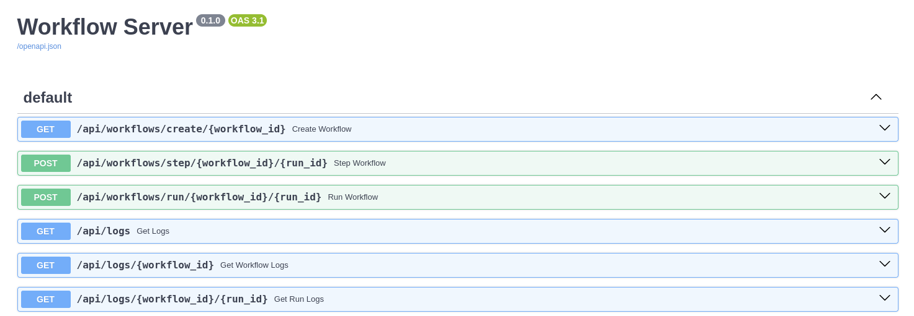

Welcome to Grapheteria!
Thanks for checking out this project! We’re excited to show you what we’ve built.
What is Grapheteria?
Grapheteria is a no-bs library for creating agentic workflows. It helps you design, visualize, and execute complex processes with minimal fuss.

“Oh no, not ANOTHER workflow library!” - I hear you. But being late to the game has its advantages. We’ve learned from others’ mistakes and borrowed their best ideas, while introducing some genuinely new features.
Why Grapheteria?
While there are standards for agent creation and tool-calling, workflow creation remains fragmented. Grapheteria aims to change that with a clean, generic framework that provides essential features while remaining infinitely extensible.
Problems with Existing Tools
Code-based workflow builders often drown you in abstractions:
- “Wait, what does this wrapper do again?”
- “How many layers of inheritance am I dealing with?”
- “I just want to see what’s happening!”
UI-only tools hit a ceiling:
- Limited customization for complex scenarios
- Multi-agent setups become impossible
- You eventually end up back in code anyway
The Vision: Best of Both Worlds
Grapheteria seamlessly blends code and UI. Freely move between visual design and code customization without compromise. Get the full power of code with the clarity of visual debugging.

Grapheteria uses state machines to define workflows - a powerful pattern that makes complex processes manageable and predictable. Learn more about state machines in Grapheteria.
Standout Features
Clean, Simple Code
Write workflows without learning a complex API first:
start_node = InputNode(id="get_name")
process_node = ProcessNode(id="greet")
output_node = OutputNode(id="display")
start_node > process_node > output_node
Visual Workflow Design

Edit your workflows visually or programmatically - they stay in sync!
Time-Travel Debugging
Made a mistake? No problem:
- Step backwards in your workflow
- Fix the issue
- Step forwards
- Continue from exactly where you left off

Built-in Essentials
- Comprehensive logging
- Automatic state persistence
- Easy resumption of workflows

Production-Ready Path
From prototype to production with minimal changes:
- Scale from local to distributed execution
- Monitor and track workflow performance
- Handle errors gracefully

Vibe-Coding Compatible
Describe what you want, then refine:
- Generate workflow skeletons with AI
- Modify rather than starting from scratch
- Rapidly prototype complex workflows

Ready to Try It?
Installation
# Create a virtual environment (recommended)
python -m venv venv
source venv/bin/activate # On Windows: venv\Scripts\activate
# Install Grapheteria
pip install grapheteria
Note: Grapheteria requires Python 3.6 or higher.
Launch the UI
Once installed, launch the UI with:
grapheteria
This will start the Grapheteria interface and automatically sync with your codebase.